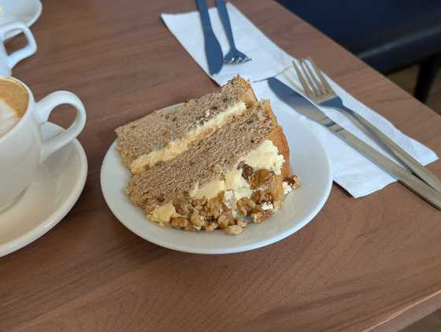
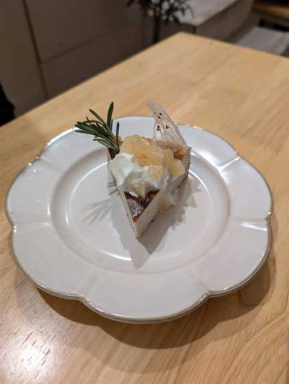
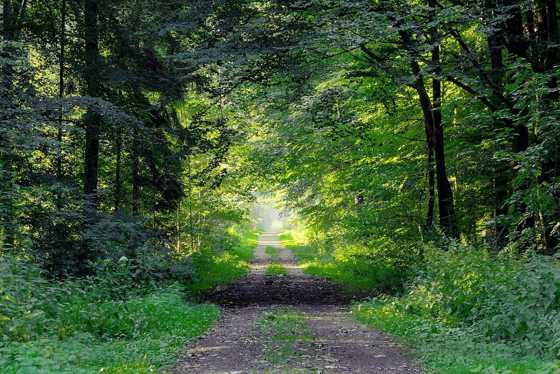
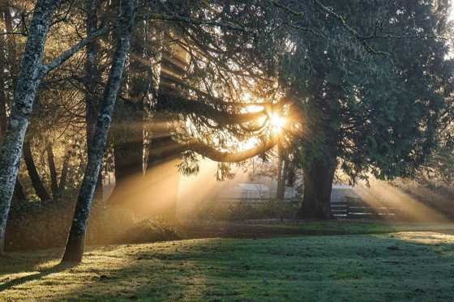
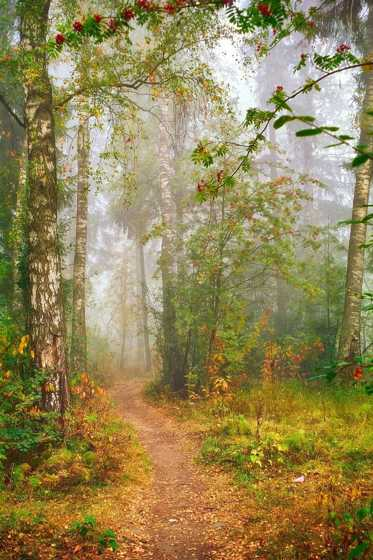
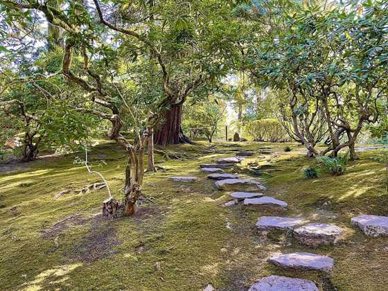
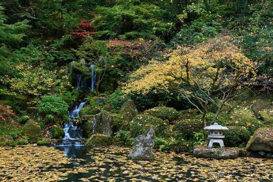
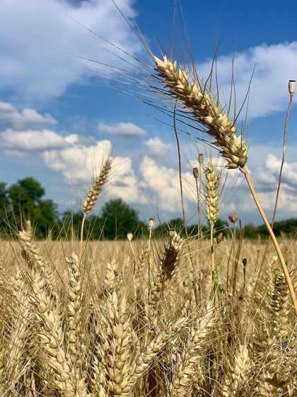
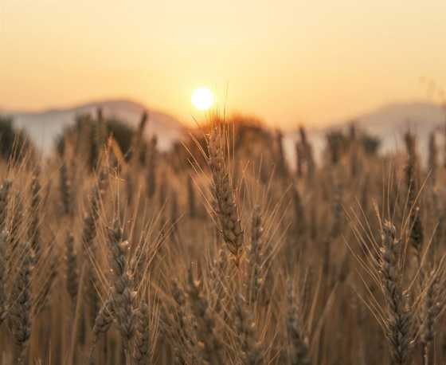

掲載している写真はフリー素材のイメージです。ライラックの店内・料理・外観などの実際の様子ではありません。海外など他の地域で撮影されたものも含まれます。
メニュー
お店のInstagramには、食事やお料理の写真も投稿されています。メニューの内容・価格・提供時間などの詳細は準備中です。以下の写真は、喫茶のひとときのイメージです。



※写真は雰囲気を伝えるイメージで、お店で提供されている品とは限りません。
口コミ
以下は制作側が作成したイメージ例であり、実在のお客様の声ではありません。
イメージ例
朝の早い時間から開いていると、通勤前に立ち寄れて助かります。落ち着いて一息つけました。
イメージ例
お昼にお食事をいただきました。のんびりした空気で、つい長居したくなる喫茶店です。
イメージ例
まちを歩いた帰りに、コーヒーで休憩。ほっとする時間をすごせました。
お店について
「ライラック」は、笠岡市中央町にある喫茶店です。Instagramのプロフィールには「喫茶ライラック」と記され、営業時間は朝8時から夕方6時と案内されています。駐車場はないとのことです。
店名の由来やオーナー様の想いは、確認できていません。このページのコンセプト「朝8時から、まちの角でひと息つける喫茶店」は、公開されている営業時間をもとにした制作側のイメージです。
- 営業時間
- 8:00〜18:00(Instagramプロフィール記載。変更の可能性があります)
- 定休日
- 準備中
- 電話
- 準備中
- 価格
- 準備中







